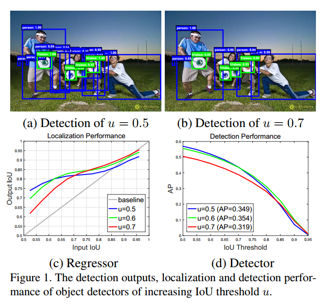
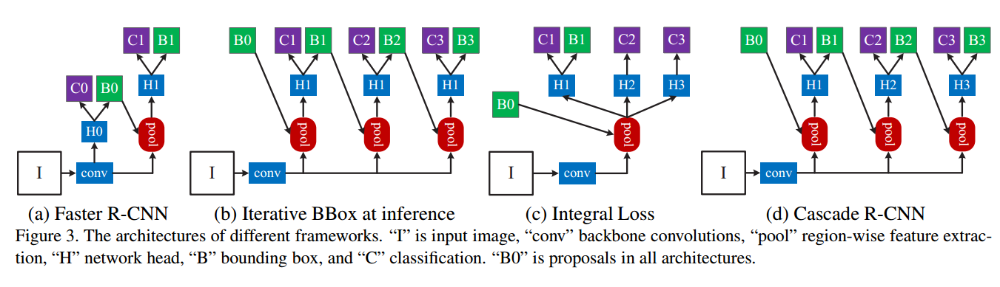
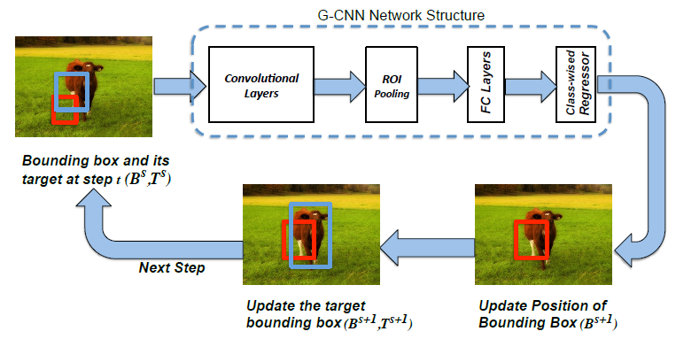

Cascade R-CNN: Delving into High Quality Object Detection
- Authors: Zhaowei Cai, Nuno Vasconcelos
- Link: https://arxiv.org/abs/1712.00726
- Tags:
R-CNNObject Detection - Year: 2017
- Official Code: https://github.com/zhaoweicai/cascade-rcnn
Motivation

在目标检测时, 需要分类和回归, 通过IoU来判断样本是否是正样本, IoU的选取对train 和 inference的影响都很大:
- 图a,b 表示的是如果IoU的阈值选择的过低, 就会出现 过多的 “close” false positives, 这部分样本和
- 图c中横轴表示proposal和GT的IoU，纵轴的是经过box reg后和GT的IoU, 不同曲线表示不同IoU阈值训练出的detector
- 在0.55-0.6的范围内阈值为0.5的detector性能最好，在0.6-0.75阈值为0.6的detector性能最佳，而到了0.75之后就是阈值为0.7的detector了
- 只有proposal自身的阈值和训练器训练用的阈值较为接近的时候，训练器的性能才最好,如果两个阈值相距比较远，就会出现mismatch的问题
- 图d中横轴表示 是否认为Proposal是真框, 纵轴表示 根据输出的框计算的AP
- 如果只是 单纯的提高 IoU的阈值, 会改变正负样本的数据分布, 会导致进一步的不平衡, 导致过拟合
可以发现图c中 大部分线条都是在y=x的灰色线条之上的， 这就说明某个proposal在经过detector后的IoU几乎必然是增加的，那么再经过一个更大阈值训练的detector，它的IoU就会更好。
KeyWord
- a single detector can only be optimal for a single quality level.
- the output of a detector trained with a certain IoU threshold is a good distribution to train the detector of the next higher IoU threshold.
- the resampling procedure of the Cascade R-CNN does not aim to mine hard negatives. Instead, by adjusting bounding boxes, each stage aims to find a good set of close false positives for training the next stage.
Detail
Cascade R-CNN 类似于GBDT的思想, 每一级的detector都是一个弱detector, 但是都是对上一级的分类和回归后的结果进行调整  图b是iterative BBox 交替的训练同一个Detector, 但是iou threshold 始终是0.5, 没有真正改善问题, 而且 bbox 的分布一直在改变, 实际上这个Detector是很难训练的, 下图就是iterative BBox
 图c是通过ensemble不同 IoU阈值的detector, 但是inference的时候需要ensemble,没有根本上改变这个问题每个阶段都需要 对偏移 be normalized by its mean and variance for effective multi-task learning.
- 每个阶段的损失包括分类和回归损失
- Cascade R-CNN实际上有四个阶段, 一个RPN和三个Detection(分别选择阈值为 0.5,0.6,0.7的), 在RPN阶段还是和faster rcnn一样, 2000个框,iou阈值为0.7, 剩下的三个Detector就是直接在 输出的 2000个框中 迭代回归, 分类的阈值就是0.5, 每个阶段都是新的
Discussion From Others
- 本文探讨了目标检测中长期以来无人问津但非常重要的问题——IoU阈值选取问题，是极具启发性的一篇工作，作者结合传统方法中的cascade思想和当前主流的Faster R-CNN检测框架，将two-stage方法在现有数据集上将检测性能又提升到了一个新高度。抛开文中大量的实验分析不谈，当我们重新审视当前目标检测算法两大主流框架（Faster R-CNN和SSD）时，一个值得思考的问题是为什么Faster R-CNN的准确率要比SSD高笔者认为这其中的一个关键是：Faster R-CNN完成了对目标候选框的两次预测，其中RPN一次，后面的检测器一次。而本文作者则更进一步，将后面检测器部分堆叠了几个级联模块，并采用不同的IoU阈值训练，进一步提升了Faster R-CNN的准确率。进而我们思考这种提升的上限什么时候会出现？表4表明cascade R-CNN在stage3时性能就已经达到饱和，这和我们的预期还是有一定差距的，如何进一步提升cascade的上限，是值得进一步探索的问题。